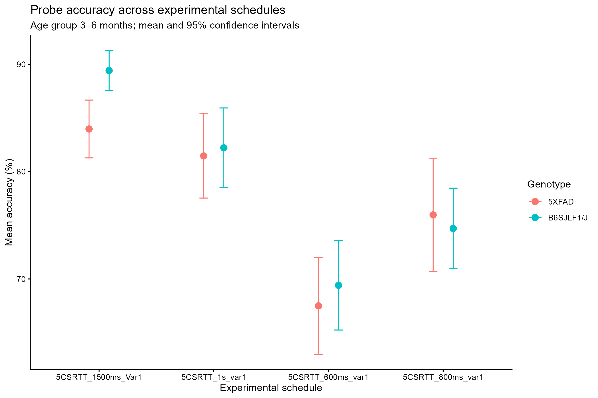
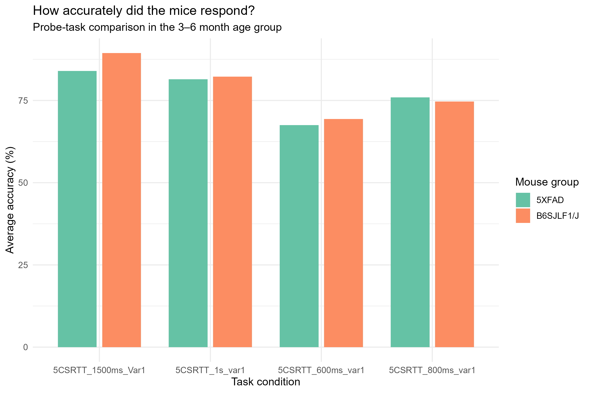
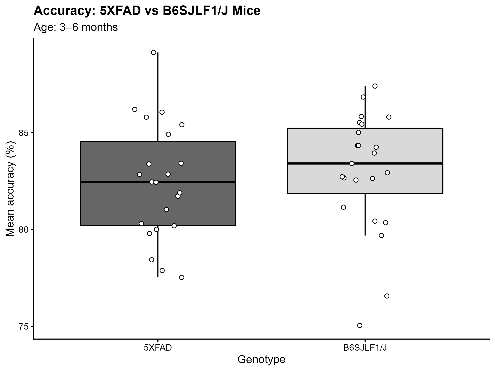

Does response accuracy differ between 5XFAD mice, a model of Alzheimer's disease, and B6SJLF1/J mice across different probe-task schedules of the five-choice serial reaction time task (5-CSRTT)?
Across four probe-task schedules, average response accuracy varies across schedules, and differences between 5XFAD and B6SJLF1/J mice are not uniform in direction or magnitude. These descriptive patterns suggest that comparisons between the two groups may depend on the experimental schedule.
These visualizations highlight the importance of considering task conditions when examining attention-related behavioural performance. However, the comparisons are descriptive and do not, on their own, establish statistical significance or causation.
This project examines response accuracy in the five-choice serial reaction time task (5-CSRTT), comparing 5XFAD mice with B6SJLF1/J mice in the 3–6-month age category across four selected probe-task schedules. The visualizations present the data using complementary approaches to help explore patterns in accuracy across genotypes and experimental conditions. These descriptive comparisons do not, by themselves, establish statistically significant genotype effects.
Group means with 95% confidence intervals.


Comparison of response accuracy between 5XFAD and B6SJLF1/J mice across the selected probe-task schedules.

Additional grayscale figures from ongoing data analysis will be added to this section as the project develops.